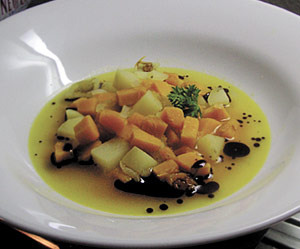

Klare Kürbissuppe
5,5 von 6ca. 400 g kürbis und drei kartoffeln in kleine würfel schneiden. mit einer zwiebel und einer knoblauchzehe in etwas öl andämpfen. mit einem gutsch weisswein ablöschen, etwas einkochen. mit wasser auffüllen bis alles leicht gedeckt ist. etwas gemüsebouillon, salz, pfeffer, etwas curry dazugeben. kochen bis die kartoffeln und der kürbis gar ist. auf dem teller mit etwas kürbiskernöl beträufeln.
